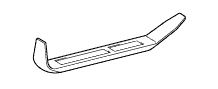

НАРУЖНОЕ ЗЕРКАЛО ЗАДНЕГО ВИДА > УЗЛЫ И ДЕТАЛИ > Подготовка

| Лента | Для предотвращения повреждения поверхности |
| Динамометрический ключ |
 | 09061-1C300 | Комплект съемников молдингов | - |
|  | (09061-1C310) | Съемник молдингов А | - |
 | (09061-1C320) | Съемник молдингов В | - |
 | (09061-1C340) | Съемник молдингов D | - |
 | 09082-00040 | Электрический диагностический прибор TOYOTA | - |
 | (09083-00150) | Комплект проводов для диагностического прибора | - |